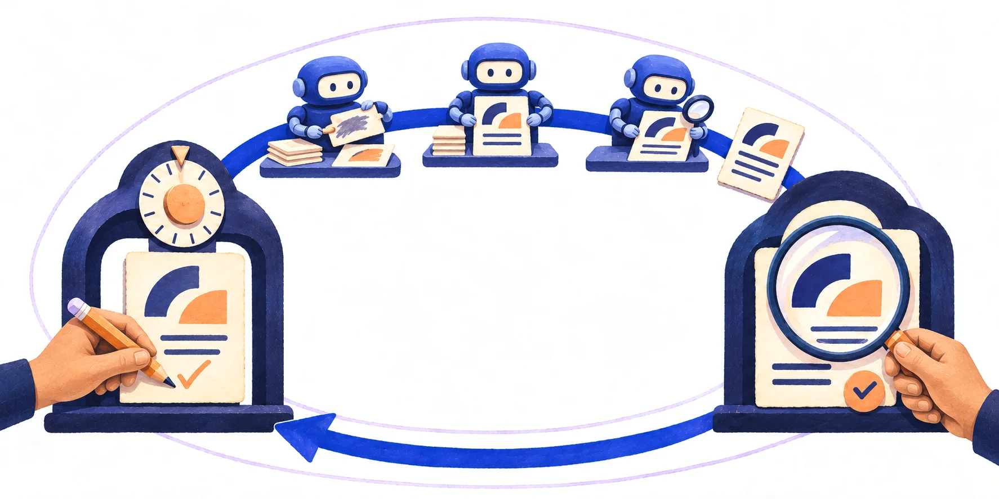

Build your AI factory
Code is the first thing AI made cheap. The other work we do hasn’t caught up.
- For engineers: how can we standardise the way we use AI to architect, review, test and release our work?
- For the rest of the team: how can we standardise the way we use AI in product, design, user research and content?
Friction now lies everywhere outside of writing code.
An AI factory gives you one place to bring all of your work together, powered by AI. You decide once how each kind of work gets done, and standardise it across your team and agents. Over three weeks, you (and your team) design and implement your own opinionated factory, moving up one loop of abstraction with each session.
